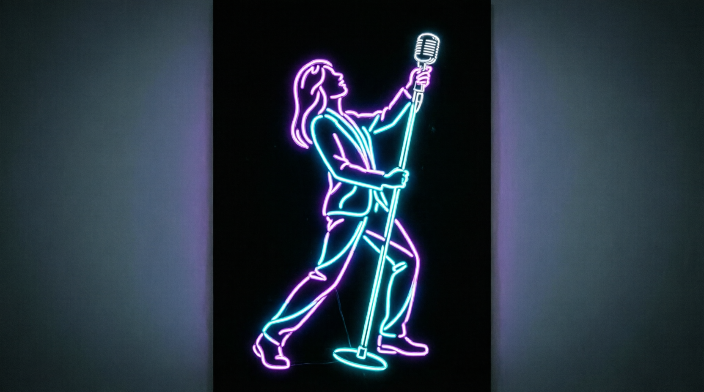
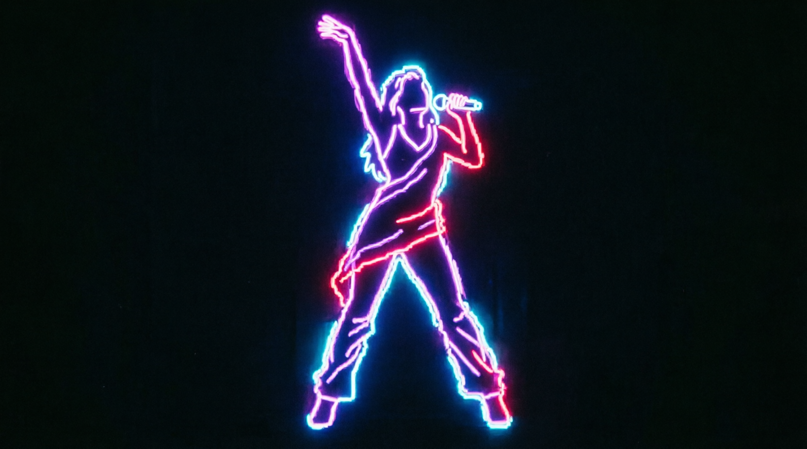
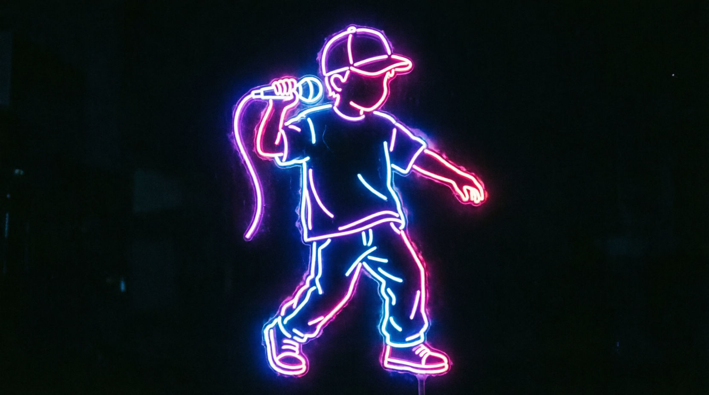

Метод
Мы считаем не уроки, а номера. Голос, тело и роль — в одной логике. Путь ребёнка идёт от прослушивания до премьеры, и мы отвечаем не за часы, а за то, с чем он выйдет к людям.
Единица работы — номер.
- Вокальная работа: дыхание, подача, фразировка, выразительность
- Движение и сценическое поведение
- Образ: как выйти, во что одеться, куда смотреть, чем закончить
- Минус или аранжировка в нашей студии
- Прогоны на сцене, пока выход не перестанет пугать
Голос. Тело. Роль.
Голос без тела зажимается: ребёнок поёт технично и стоит столбом.
Тело без роли пустое: движения есть, а зачем — непонятно.
Роль без голоса не звучит.
Артист собирается только целиком. Поэтому у нас все три направления в одном месте и в одной логике.
Вокал
Дыхание, диапазон, тембр, работа в разных стилях: эстрада, рок, джаз, соул, r&b. Ансамблевое пение и внутренний слух.
Хореография
Управление телом, осанка, пластика, чувство ритма. Постановка конкурсных и концертных номеров, сценическое поведение.
Актёрское
Роль, драматургия песни, сценическая речь, взаимодействие с партнёром и с залом. То, из-за чего зритель смотрит на артиста, а не в телефон.



Мини-мюзикл каждый год. Участники собирают полноценную постановку и играют её на городской площадке. Кастинг в новую постановку →
Как это устроено
Прослушивание
Смотрим, что уже есть: слух, диапазон, свобода, интерес. Говорим честно, с чего начинать.
Индивидуальная база
Голос ставится один на один. Здесь появляется техника, без которой в группе делать нечего.
Группа
Ансамбль, хореография, работа в составе. Ребёнок учится слышать других и держать своё место.
Номер и сцена
Первый собственный номер. Конкурс, фестиваль, концертная площадка.
Запись и премьера
Трек в студии. Роль в постановке. Премьера перед полным залом.
Это не обязательная лестница на пять лет. Кто-то приходит сразу за номером к конкурсу, кто-то остаётся на весь путь.
Что у ребёнка
будет через год
- Готовый конкурсный номер, а не выученная песня
- Роль в спектакле, который видел город
- Записанный трек, который можно включить друзьям
- Видео с нормальной площадки, а не снятое на телефон из зала
- Портфолио, с которым идут на прослушивание в другой город
- Опыт выхода, после которого сцена перестаёт пугать
ребёнок больше не боится выходить.
Для тех, кому важны детали
Методическая база и техники
Estill Voice Training, Complete Vocal Technique, фонопедический метод развития голоса.
Методические наработки Ольги Кляйн, Анастасии Балевой, Анастасии Велигуровой, Веры Fox. Курсы IYATS. Джазовая гармония и импровизация.
В работе: дизайн звука, фразировка, динамика, вокальные техники Belting, Cry, Speech, Twang, Sob, мелизматика.